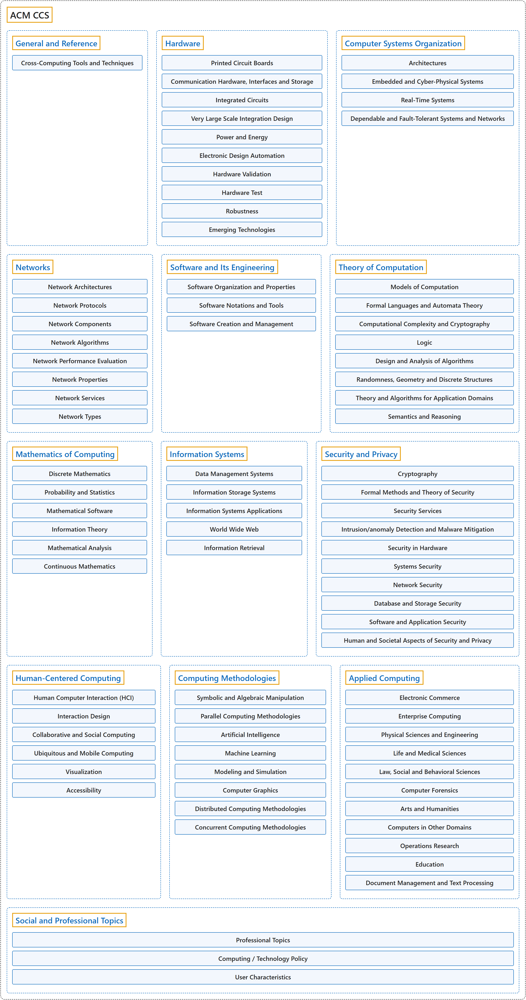

ACM CCS
Classification

Glossary
| Term | Definition | 中文翻译 | Source |
|---|---|---|---|
| ACM CCS ACM 计算分类系统 |
"The 2012 ACM Computing Classification System has been developed as a poly-hierarchical ontology that can be utilized in semantic web applications. It replaces the traditional 1998 version of the ACM Computing Classification System (CCS), which has served as the de facto standard classification system for the computing field." | 2012 ACM 计算分类系统被开发成一个多层级的本体，可以用于语义网应用。它取代了传统的 1998 版 ACM 计算分类系统（CCS），后者一直是计算领域事实上的标准分类系统。 | Association for Computing Machinery, 2012, para. 1 |
| General and Reference 一般与参考 |
(No definition) | （无定义） | Association for Computing Machinery, 2012 |
| Hardware 硬件 |
(context) "The Architecture and Organization (AR) knowledge area aims to develop a deeper understanding of the hardware environments upon which almost all computing is based, and the relevant interfaces provided to higher software layers." | （语境）计算机体系结构与组成（AR）知识领域旨在加深理解两方面：几乎所有计算赖以进行的硬件环境，以及为更高软件层提供的相关接口。 | Joint Task Force on Computing Curricula, 2024, AR "Preamble" section, para. 2 |
| Computer Systems Organization 计算机系统组织 |
(context) "A computer system is a set of hardware and software infrastructures upon which applications are constructed." | （语境）计算机系统是一组硬件和软件基础设施，应用程序在其上构建。 | Joint Task Force on Computing Curricula, 2024, SF "Preamble" section, para. 1 |
| Networks 网络 |
(context) "This knowledge area deals with key concepts in networking and communication, as well as their representative instantiations in the internet and other computer networks." | （语境）这个知识领域涉及网络与通信的关键概念，以及它们的代表性实现，即在互联网和其他计算机网络中的实现。 | Joint Task Force on Computing Curricula, 2024, NC "Preamble" section, para. 2 |
| Software and Its Engineering 软件及其工程 |
(context) "This is an essential insight: while programming is the skill that governs our ability to write a program, software engineering is distinct in two dimensions: time and people." | （语境）这是一个关键的洞见：编程是决定我们能否写出程序的技能，而软件工程的不同在于两个维度：时间和人。 | Joint Task Force on Computing Curricula, 2024, SE "Preamble" section, para. 1 |
| Theory of Computation 计算理论 |
(context) "Algorithms and data structures are fundamental to computer science, since every theoretical computation and applied program consists of algorithms that operate on data elements possessing some underlying structure." | （语境）算法和数据结构对计算机科学至关重要，因为每一个理论计算和应用程序都由算法构成，这些算法操作的数据元素具有某种底层结构。 | Joint Task Force on Computing Curricula, 2024, AL "Preamble" section, para. 1 |
| Mathematics of Computing 计算数学 |
(context) "This Mathematical and Statistical Foundations (MSF) knowledge area – the successor to the ACM CS2013 curriculum's 'Discrete Structures' area – seeks to identify the mathematical and statistical material that undergirds modern computer science." | （语境）数学与统计基础（MSF）这一知识领域是 ACM CS2013 课程体系中"离散结构"领域的继任者，旨在找出数学和统计内容，它们支撑着现代计算机科学。 | Joint Task Force on Computing Curricula, 2024, MSF "Preamble" section, para. 1 |
| Information Systems 信息系统 |
"Discrete set of information resources organized for the collection, processing, maintenance, use, sharing, dissemination, or disposition of information." | 为收集、处理、维护、使用、共享、分发或处置信息而组织起来的一组离散的信息资源。 | National Institute of Standards and Technology, n.d., "information system" entry, definition 1 |
| Security and Privacy 安全与隐私 |
(context) "The Security (SEC) knowledge area focuses on developing a security mindset into the overall ethos of computer science graduates so that security is embedded in all their work products." | （语境）安全（SEC）知识领域着重把安全思维融入计算机科学毕业生的整体精神，使安全嵌入他们所有的工作成果。 | Joint Task Force on Computing Curricula, 2024, SEC "Preamble" section, para. 2 |
| Human-Centered Computing 以人为本的计算 |
(context) "Human-computer interaction (HCI) addresses those issues from an interdisciplinary perspective that includes computer science, psychology, business strategy, and design principles." | （语境）人机交互（HCI）从跨学科的视角处理这些问题，这一视角包括计算机科学、心理学、商业战略和设计原则。 | Joint Task Force on Computing Curricula, 2024, HCI "Preamble" section, para. 1 |
| Computing Methodologies 计算方法 |
(No definition) | （无定义） | Association for Computing Machinery, 2012 |
| Applied Computing 应用计算 |
(No definition) | （无定义） | Association for Computing Machinery, 2012 |
| Social and Professional Topics 社会与职业主题 |
(context) "It is more evident today than ever that students must also be exposed to the larger societal context of computing to develop an understanding of the critical and relevant social, ethical, legal, and professional issues and responsibilities at hand." | （语境）如今比以往任何时候都更明显：学生还必须接触计算的更大社会背景，从而理解当前关键且相关的社会、伦理、法律和职业问题与责任。 | Joint Task Force on Computing Curricula, 2024, SEP "Preamble" section, para. 2 |
References
Association for Computing Machinery. (2012). The 2012 ACM Computing Classification System. Retrieved October 27, 2026, from https://www.acm.org/publications/class-2012
Joint Task Force on Computing Curricula. (2024). Computer science curricula 2023. Association for Computing Machinery. https://doi.org/10.1145/3664191
National Institute of Standards and Technology. (n.d.). Information system. In CSRC glossary. Retrieved October 27, 2026, from https://csrc.nist.gov/glossary/term/information_system